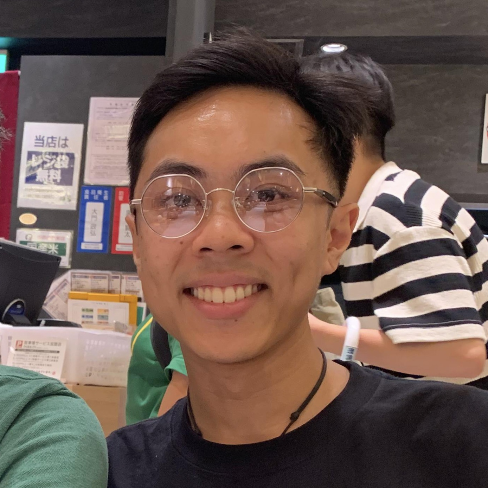

|

|
Graduate Cloud Engineer
I pride myself on being a reliable, hard-working and focused person who
loves learning about new technologies and loves interacting with new
people. My key interests include Cloud Computing, Networking (Cisco) and
Programming (Web and Python).
I am currently spending a year in Japan to improve my Japanese, immerse
myself in the culture, and experience a completely different working culture.
During my time in Japan, I have been freelance English teaching as well as
working in the hospitality industry in various locations throughout Japan.
Outside of work, I'm very interested in Japanese literature, music,
coffee and cats 🐱
|
|
Cloud Engineer Intern
National Australia Bank
Jan 2022 - Jun 2023
Rotation 2 - Cloud Migration Execution (CME)
Aug 2022 to Jun 2023
- Assisted with the Cloud migration of multiple on-premise applications into Azure to further push NAB's cloud-first strategy
- Assisted with automating the Cloud Compliance documentation process resulting in smoother and more reliable evidence collection
- Drafted various key Cloud migration documents ranging from SOAPs (Solutions on a Page) and Cloud Capacity Plans to DR Plans
- Worked with the NAB Change Management team to ensure all migration work followed the proper processes
- Liaised with various asset teams and DBAs regarding migration information, on-premise build details and the like
Rotation 1 - Cloud Cost Optimisation (FinOps)
Jan 2022 to Jul 2022
- Assisted the FinOps team in identifying both potential cost-saving and rightsizing opportunities in Azure and AWS
- Liaised with various asset teams regarding cost anomalies, cost-saving initiatives and Cloud tagging compliance
- Streamlined the Cloud P2BAU Process for past, present and future applications
- Compiled basic cost modelling/analysis reports and Cloudability dashboards to easier display insights to asset teams and service owners
- Hosted monthly bootcamp sessions showcasing Cloudability @ NAB and FinOps @ NAB
- Provided technical support and assistance to asset teams (reg. Cloudability - NAB's cloud financial management platform)
|
|
Bachelor of Information Technology
RMIT University
2019 - 2021
- Distinction average: 3.8/4.0 GPA
- Majors (mixed):
- Web & Mobile Computing
- Security & Cloud Computing
- Software Systems Development
- Minor in Cisco Networking
Certifications
- Using Terraform to Manage Applications and Infrastructure (A Cloud Guru | A Pluralsight Company)
- Azure Fundamentals - AZ-900 (Microsoft)
|
|
Skills
- Programming Languages
- Java, JavaScript, C++, SQL, HTML, CSS, PHP, Python, Ruby
- Software
- MS Office, Weka, VirtualBox, PuTTY, VS Code, IntelliJ, Splunk
- Operating Systems
- Windows 7/10/11, Linux (Ubuntu), macOS
- Platforms
- GitHub, Amazon AWS, Microsoft Azure, Google Cloud, Cloudability, Heroku, ServiceNow
Interests
- Puzzles, music, photography, reading novels, working out, coffee, cats, exploring other cultures
Languages
- English (Fluent)
- Japanese (Basic/Conversational)
|
|
Junior Barista
Homestead Café (City of Casey)
May 2018 - Mar 2019
- Took coffee and other beverage orders and prepared them for customers quickly and effectively
- Assisted kitchen staff in preparing various food items
Festival Volunteer
Melbourne Japanese Summer Festival
Feb 2019
- Greeted visitors and answered general questions about the festival and festival events
- Assisted in managing the giveaway book stall and handled gold coin donations for the festival
|